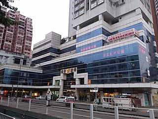
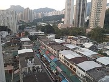
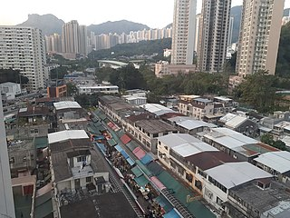
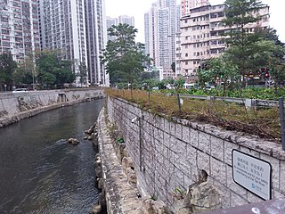
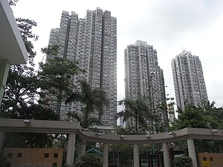

Gallery of Wong Tai Sin images
Have a look at different views of Wong Tai Sin!
-
Photo credit: Wikimedia Commons, WiNG -

Photo credit: Wikimedia Commons, Dua Grecviem -


Photo credit: Wikimedia Commons, FAILWIA 2091O -

Photo credit: Wikimedia Commons, Dua Grecviem -

Photo credit: Wikimedia Commons, Lawrenze11